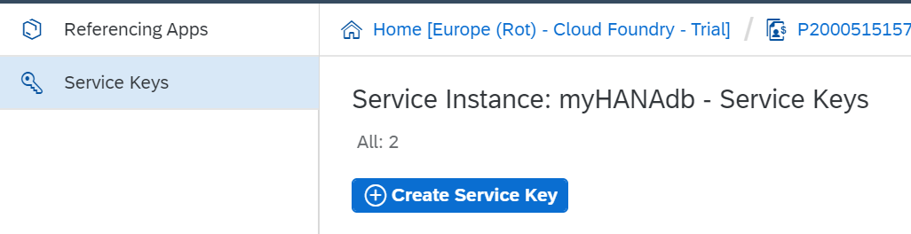

Deploy to SAP Cloud Foundry ()
Note: This feature momentarily has to be implemented manually. As soon as possible, this process will be automated.
Prerequisites:
Cloud Foundry ConfigurationLog In into SAP Cloud Foundry Trial (if you do not have an account, you have to create one). Once there, select trial: Then, select the dev Space as shown below: In the left menu select: Services > Service Marketplace. Then, search for Hana using the search box, and select SAP HANA Schemas & HDI Containers:
The next step is to create a new instance of the service. So, select: Instances and press the New Instance button:
A Popup Wizard will be opened. On the first step, select the "hdi-shared" value for the Plan combo box and click on the Next button: On this next step, you can specify parameters for the schema. You have to configure the schema name using a JSON: Note: myschema is an example name. You can choose the name that you prefer for your schema. The next step is to bind the container to an application you already have on the cloud. Leave it in (None): On the last step, you can choose the Instance Name: Click on Finish to create the instance. Notes: You can create the HDI instance from the command line using the command: cf create-service hanatrial hdi-shared myHANAdb. When the instance is created you have to create a Service key for it. To do so, select on the left menu: Service Instances. Then, select your Instance. After that, select: Service Keys and press the Create Service Key button. Then, select the name you want for it and click Save.  You can check if the service key was created successfully by selecting it and it will display a JSON. Save it because it will be used when setting up the Data Store.
SAP Cloud Platform (Neo) ConfigurationTo be able to use the HDI instance to store data you have just created, you need to access to the Neo Environment of your Cloud Platform Account. After proceeding with the login, you have to select on Home: <Your Region> - Cloud Foundry - Trial. This will take you to this next page:
Scroll down the page until you found the Access Neo Trial option:
Select Access Neo Trial. This will send you to the Neo Environment Cockpit. The first step here is to enable “Principal Propagation”. To do so, select in the left menu: Security > Trust. Then, click on the Edit button, change the value of the Principal Propagation field to Enabled, and Save: This will allow the Web IDE of Neo to communicate with Cloud Foundry. Next, you have to enable the Web IDE Full-Stack tool. To achieve this, select in the left menu: Services > SAP Web IDE Full-Stack, enable it, and select Go to Service.
Once opened the Web IDE, you may be prompted to connect to Cloud Foundry. If not, you can set it up by going to Preferences > Workspace Preferences > Cloud Foundry and by setting it up with the correct endpoint. This will vary according to what Region your Cloud Foundry is.
After this setup, go to the Home Page, select: New Project from Template > (Environment=Cloud Foundry) Multi-Target Application, enter a name (the name is not relevant for the deploy) and select Finish. This should take you to the Development screen: Once here, you have to right-click on <Your Application Name> and select: New > SAP HANA Database Module:
A wizard will be opened. Enter a Name (the name that you prefer), then press Next and Finish: The next step is to enable the Database Explorer in order to manage the HDI Container. To do so, go to Preferences > Extensions and search for "Database Explorer". Turn SAP HANA Database Explorer on. Then, go to the Database Explorer and select the plus symbol:
It will open a prompt in which you have to select the HDI Instance you had created. To do so, select Database Type = HDI Container. All the HDI instances you have will be shown. Select the one you will use to deploy your app and click OK:
This will connect the Web IDE with the HDI Container allowing you to execute SQL Queries.
Data Store ConfigurationNote: You have to use a HANA Data Store and it is only tested on a Java Environment.
To be able to use the HDI container, you need to configure the Data Store. To achieve this, go to the Knowledge Base Preferences and select the Environment you want to deploy. Then, select the desired Data Store, and set the following properties with the values you have on the JSON you retrieved from the HDI container Key:
Also leave the Server Name Property empty. You should have something like this:
After setting these properties, select in the main GeneXus Menu: Build > Create Database Tables, but do NOT have to create the tables. You will use the queries on the Statements section of the Impact Analysis to manually create the Tables on the HDI Container. To execute the queries you need to return to the SAP Cloud Platform Neo Environment Web IDE. Then, go to the Database Explorer, right-click on the database and select: Open SQL Console. This will open a console where you will have to execute the queries one by one respecting the order in which they appear in GeneXus. You have to do this to create the database structure on the HDI Container since it is the only way to do it. After executing all the queries you are ready to deploy the application to SAP Cloud Foundry.
|